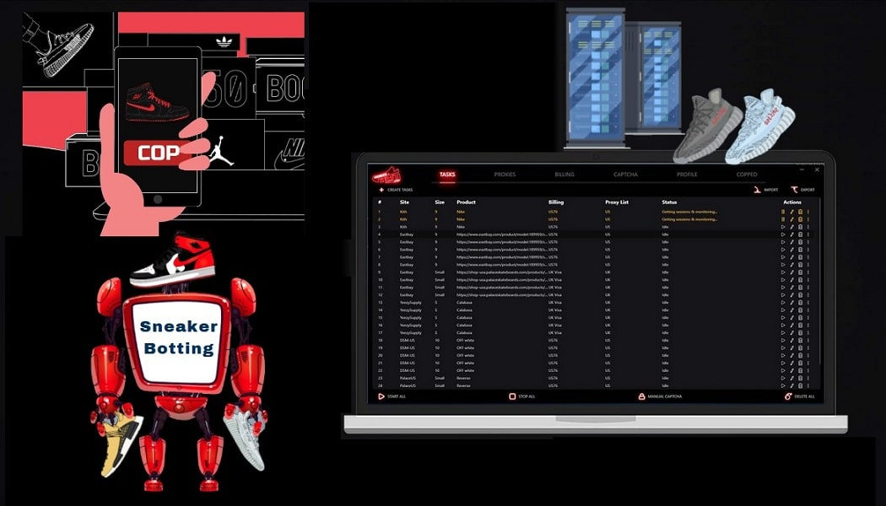
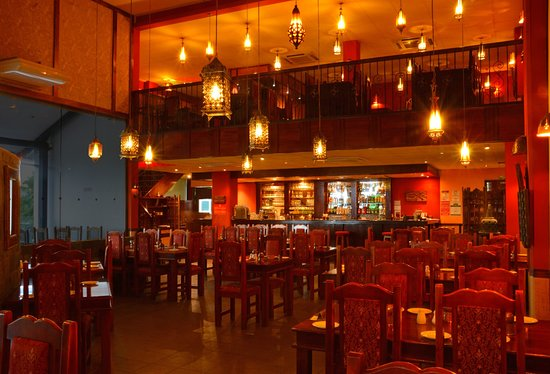
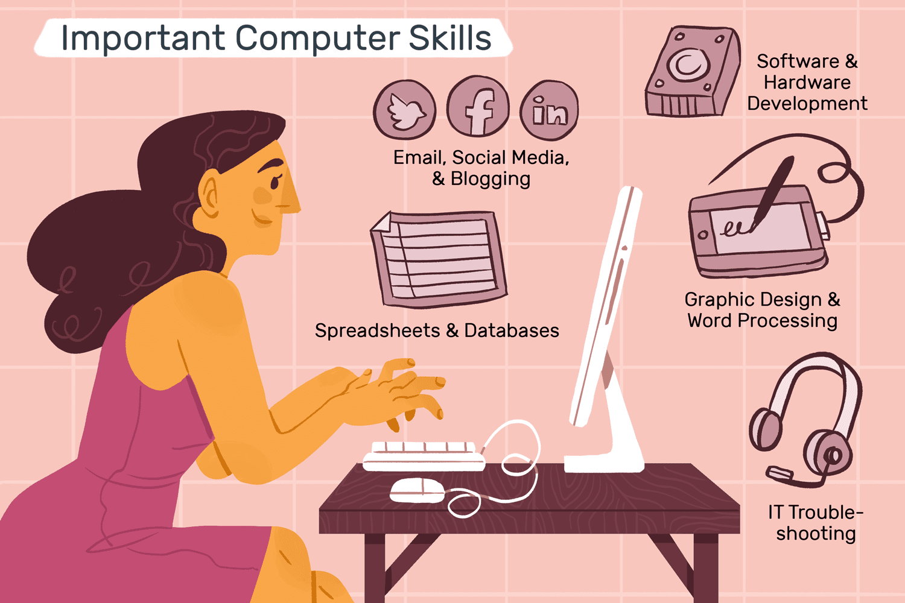
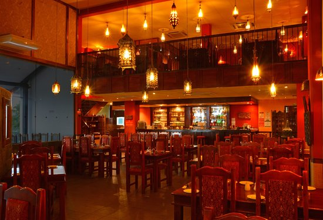
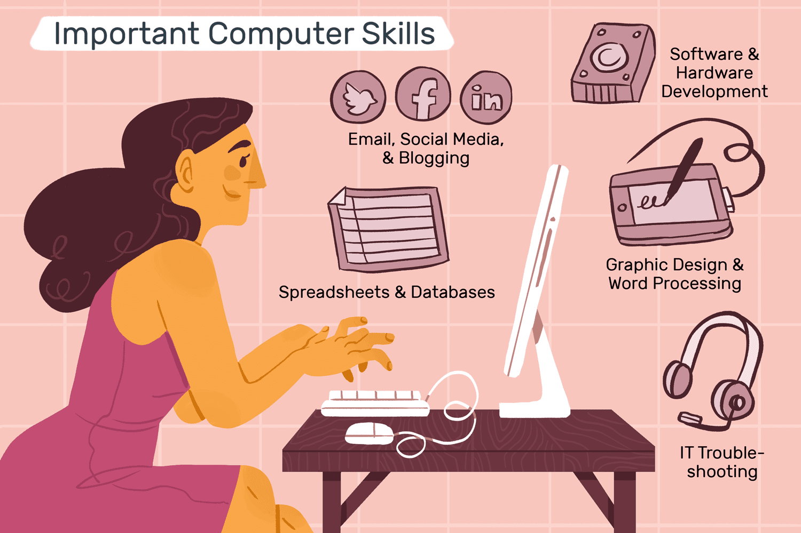

Portfolio




 
Ben Truong is a highly skilled computer scientist with over seven years of experience in the tech industry. He has a deep passion for computer science and is constantly exploring new technologies and programming languages. Ben's career has been marked by a dedication to excellence and a commitment to staying at the forefront of the industry.
Ben received his bachelor's degree in computer science from the University of California, Los Angeles. During his time at UCLA, he took a wide range of computer science courses, including algorithms, databases, and operating systems. He was also a member of the university's computer science club, where he worked on various coding projects and collaborated with other students.
After graduating from UCLA, Ben landed his first job as a software developer at a startup in San Francisco. He was tasked with developing a new web application from scratch, which he did successfully within the given timeline. His work was highly praised by his team and company executives. Ben's passion for computer science and his ability to learn quickly made him an invaluable member of the team.
Over the next few years, Ben continued to develop his skills as a software developer. He worked for several other startups and gained experience in various programming languages such as Java, Python, and JavaScript. Ben also honed his skills in software design and project management, which led to several successful projects.
In 2018, Ben was hired by a large tech company as a software engineer. He was tasked with developing a complex software system for a large-scale project. Ben's expertise in software design and his ability to work collaboratively with other team members helped the project to be completed on time and within budget. His contribution to the project was highly appreciated by his team and company.
Ben was later promoted to a lead software engineer position, where he oversaw the development of several key software products. He worked closely with his team to ensure that projects were completed on time and within budget. Ben also collaborated with other departments within the company to ensure that the software products met the needs of the customers.
Outside of work, Ben is an avid gamer and enjoys exploring new technologies related to gaming. He also enjoys reading books on computer science and is constantly learning about new programming languages and software development tools. Ben is also a mentor to several aspiring software developers, whom he helps to develop their skills and achieve their career goals.
In summary, Ben Truong is a highly skilled and dedicated computer scientist with a passion for software development. He has a proven track record of success in the tech industry, and his expertise in software design and project management has helped to lead several successful projects. Ben's commitment to learning and mentoring makes him a valuable asset to any team.